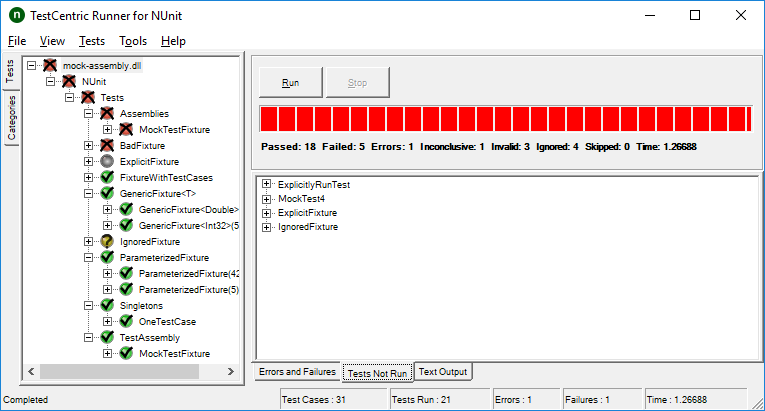

The TestCentric Runner shows the tests in an tree display on the left of the main window and provides a visual indication of the success or failure of the tests. It allows you to selectively run single tests or suites and reloads automatically as you modify and re-compile your code. The following is a screenshot of the runner after running the tests in a sample assembly.

In this example, there were a total of 31 test cases, of which 21 were run.
Tree Display
| Symbol | Test Status |
|---|---|
| Passed | |
| Error or Failure | |
| Warning or Ignored | |
| Skipped | |
| Inconclusive |
The test tree uses both colors and symbols to indicate the test status.
Note: Tests marked with the IgnoreAttribute are shown in yellow immediately upon loading. Similarly, non-runnable tests (e.g.: wrong argument type) are shown in red immediately, without waiting for the user to press Run. Other statuses are not shown until after the test is run.
Run and Stop Buttons
Clicking Run causes the test selected in the tree display to run. If the selected test contains subordinate tests nested beneath it, they all run as well. If the topmost tree node is selected, then all the tests are run. When checkboxes are enabled in the tree display, multiple non-nested tests may be selected.
While a test is running the Stop button is enabled. Clicking it causes the tests to stop in an orderly fashion. No new test cases are started but all those currently running are allowed to complete. Any both individual and one-time teardown methods are allowed to execute so that the tests may clean up after themselves and dispose of any resources.
While the orderly stop is in progress, the Stop button label changes to Forced Stop. This is intended to be used in situations where the framework in use or the tests themselves are preventing an orderly stop from completing. For example, a test with an infinite loop might otherwise never terminate. Once Forced Stop is clicked, the runner instructs the test framework to terminate execution forcibly,
Some frameworks may not be able to force termination, either because the framework doesn't have that feature or because of a bug. After waiting 5 seconds for forced termination to complete, the GUI will itself terminate all tests by or unloading any test AppDomains or Processes, which have not terminated.
Progress Bar
The progress bar shows the progress of the test. It is colored according to the "worst" result obtained: red if there were any failures, yellow if some tests were ignored and green for success.
Result Summary
At the end of the test run, a summary of the results is displayed immediately below the progress bar. If the result information does not fit in the space available, hovering over it shows the full information.
Result Tabs
Three tabs along the bottom of the display show the results of running a test.
Errors, Failures and Warnings
The Errors, Failures and Warnings tab displays the error message and stack trace for both unexpected exceptions and assertion failures. Either the raw stacktrace or actual source code for each stack location can be displayed in this tab, provided that the program was compiled with debug information.
Tests Not Run
The Tests Not Run tab provides a list of all tests that were selected for running but were not run, together with the reason.
Text Output
The Text Output tab displays text output from the tests in a format similar to that shown by the console runner, including labels for the tests if specified by the user in the settings dialog.